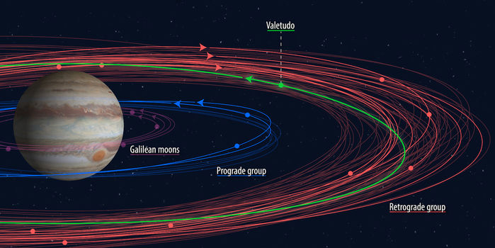

Ten new moons—including one ‘oddball’—discovered around Jupiter
Jupiter’s orbital family has just rapidly expanded, with scientists today announcing the discovery of 10 new miniature moons around the gas giant.
Far beneath the deeply frozen ice cap at Mars’s south pole lies a lake of liquid water—the first to be found on the Red Planet.
A new study argues that the boundary between Earth’s atmosphere and outer space—known as the Kármán line—is 20 kilometers, or about 20%, closer than scientists thought.
Jupiter’s orbital family has just rapidly expanded, with scientists today announcing the discovery of 10 new miniature moons around the gas giant.
If astronomers are right, a ghostly particle that lit up an instrumented swath of ice beneath the South Pole on 22 September last year was a messenger from a distant galaxy.